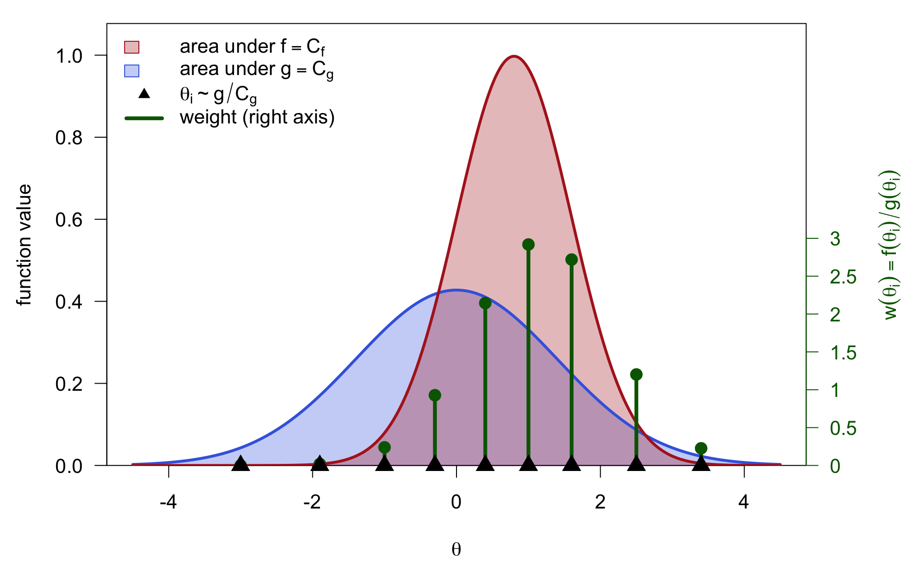
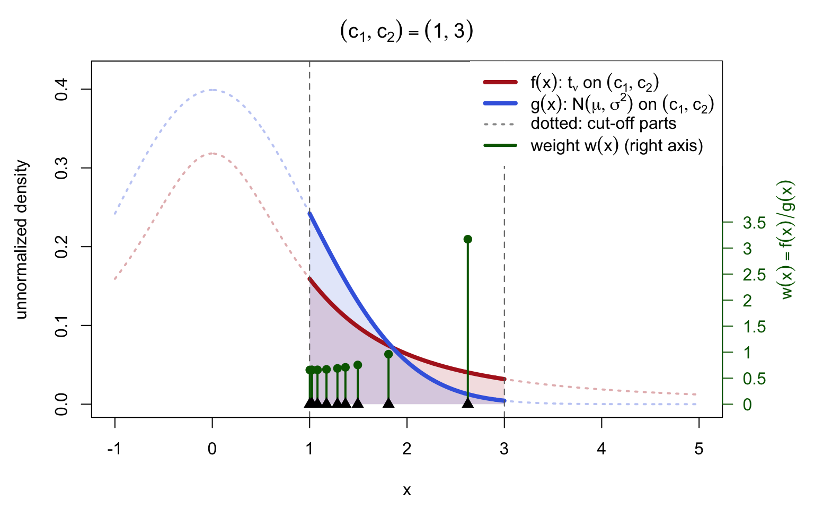
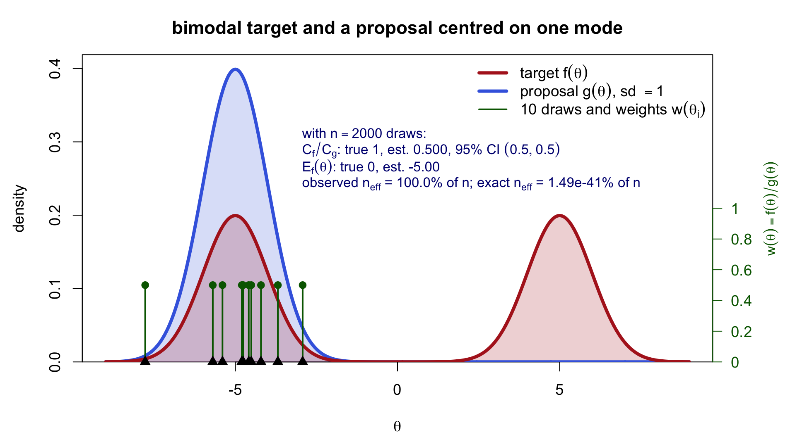
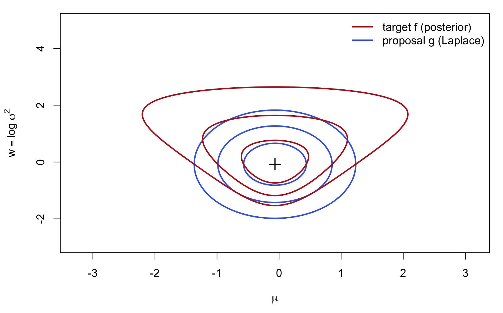
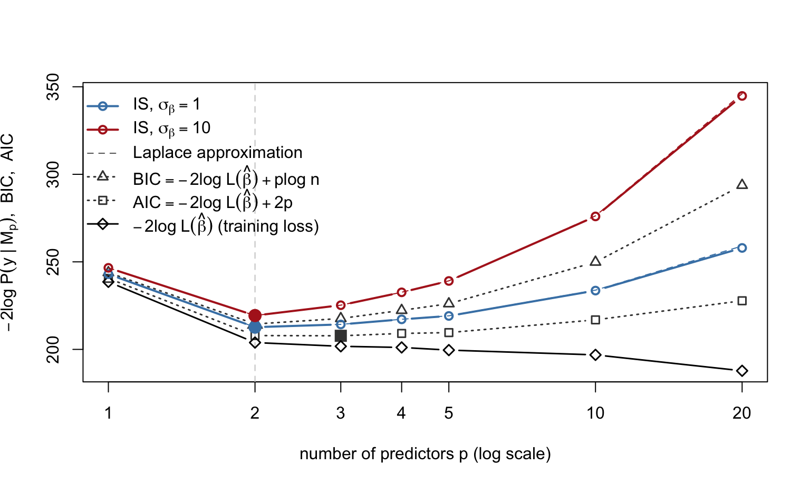
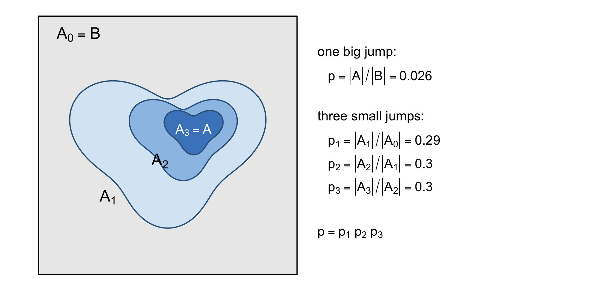

Code
library(ars)
library(latex2exp)library(ars)
library(latex2exp)Let \(f(\theta)\) be an unnormalized function of interest. In Bayesian inference it is typically the product of a prior and a likelihood, \(f(\theta)=\pi(\theta)L(\theta)\). Two integrals with respect to \(f(\theta)\) come up again and again:
The normalizing constant (in Bayesian inference, the marginal likelihood), \[ C_f = \int f(\theta)\,d\theta . \]
An expectation (in Bayesian inference, a posterior expectation), \[ A = \frac{\int a(\theta)\,f(\theta)\,d\theta}{\int f(\theta)\,d\theta} = E_f\big[a(\theta)\big], \qquad \theta\sim\frac{f(\theta)}{C_f}. \]
Plain Monte Carlo would average \(a(\theta)\) over draws from \(f(\theta)/C_f\), which in most problems we cannot produce. Rejection sampling turns draws from an envelope \(g(\theta)\ge f(\theta)\) into exact draws from \(f(\theta)/C_f\), but every rejected proposal is wasted, and in the tails of a poor envelope almost every proposal is rejected. An envelope may also be hard to find at all.
Importance sampling keeps every proposal instead of discarding most of them. Draw from an easier function \(g(\theta)\) and attach a weight to each draw that corrects for sampling from the wrong distribution:
Nothing is ever thrown away, and no envelope condition \(g(\theta)\ge f(\theta)\) is required. The price is that the sample is no longer an exact iid sample from \(f(\theta)/C_f\), only a weighted one.
The one requirement on \(g(\theta)\) is that it be positive wherever \(f(\theta)\) is: \[ \{\theta: g(\theta)>0\}\ \supseteq\ \{\theta: f(\theta)>0\}. \] Otherwise part of \(f(\theta)\) is never visited and the estimate is biased. Even when the requirement holds, a proposal can put so little mass where \(f(\theta)\) lives that the region is never visited in practice; Example 3 below shows how badly that can go.
Figure 11.1 shows the idea for two univariate functions. The area under \(f(\theta)\) is \(C_f\) and the area under \(g(\theta)\) is \(C_g\). The draws \(\theta_i\) come from \(g(\theta)/C_g\), so they are dense where \(g(\theta)\) is high. Each carries the weight \(w(\theta_i)=f(\theta_i)/g(\theta_i)\): where \(f(\theta)\) rises above \(g(\theta)\) the weights are large, and where \(g(\theta)\) dominates they are small. The average weight estimates the area ratio \(C_f/C_g\), as the next section shows.
f <- function(x) 2 * dnorm(x, 0.8, 0.8) # unnormalized target, C_f = 2
g <- function(x) 1.5 * dnorm(x, 0, 1.4) # proposal, C_g = 1.5
xs <- seq(-4.5, 4.5, length.out = 600)
th <- c(-3.0, -1.9, -1.0, -0.3, 0.4, 1.0, 1.6, 2.5, 3.4)
w <- f(th) / g(th)
sc <- 0.5 * max(f(xs)) * 1.08 / max(w) # tallest weight reaches half the y-axis
par(mar = c(4.2, 4.5, 1, 4.5), cex = 1.3)
plot(xs, f(xs), type = "n", ylim = c(0, max(f(xs)) * 1.08), yaxs = "i",
xlab = expression(theta), ylab = "function value", las = 1)
polygon(c(xs, rev(xs)), c(g(xs), rep(0, length(xs))),
col = adjustcolor("royalblue", 0.30), border = NA)
polygon(c(xs, rev(xs)), c(f(xs), rep(0, length(xs))),
col = adjustcolor("firebrick", 0.30), border = NA)
lines(xs, g(xs), col = "royalblue", lwd = 3)
lines(xs, f(xs), col = "firebrick", lwd = 3)
segments(th, 0, th, w * sc, col = "darkgreen", lwd = 4)
points(th, w * sc, pch = 19, col = "darkgreen", cex = 1.3)
points(th, rep(0, length(th)), pch = 17, col = "black", cex = 1.6, xpd = NA)
wt <- pretty(c(0, max(w)))
axis(4, at = wt * sc, labels = wt, las = 1, col.axis = "darkgreen", col = "darkgreen")
mtext(expression(w(theta[i]) == f(theta[i]) / g(theta[i])), side = 4, line = 3.2,
col = "darkgreen", cex = 1.3)
legend("topleft", bty = "n",
legend = c(expression("area under " * f == C[f]), expression("area under " * g == C[g]),
expression(theta[i] %~% g / C[g]), "weight (right axis)"),
fill = c(adjustcolor("firebrick", 0.3), adjustcolor("royalblue", 0.3), NA, NA),
border = c("firebrick", "royalblue", NA, NA),
pch = c(NA, NA, 17, NA), lty = c(NA, NA, NA, 1), lwd = c(NA, NA, NA, 4),
col = c(NA, NA, "black", "darkgreen"))
Let \(C_f = \int f(\theta)\,d\theta\), \(C_g = \int g(\theta)\,d\theta\), and \(w(\theta) = f(\theta)/g(\theta)\).
The ratio of normalizing constants. Multiply and divide by \(g(\theta)\) inside the integral for \(C_f\): \[ \frac{C_f}{C_g} = \frac{\int f(\theta)\,d\theta}{\int g(\theta)\,d\theta} = \int\frac{f(\theta)}{g(\theta)}\cdot\frac{g(\theta)}{C_g}\,d\theta = E_g\big[w(\theta)\big], \] an expectation under the normalized proposal \(g(\theta)/C_g\).
The expectation of \(a(\theta)\). The same trick in the numerator, then the result above in the denominator: \[ \begin{aligned} E_f\big[a(\theta)\big] &= \frac{\int a(\theta)\,f(\theta)\,d\theta}{C_f} = \frac{\displaystyle\int a(\theta)\,\frac{f(\theta)}{g(\theta)}\cdot\frac{g(\theta)}{C_g}\,d\theta}{C_f/C_g} \\[6pt] &= \frac{E_g\big[a(\theta)\,w(\theta)\big]}{C_f/C_g} = \frac{E_g\big[a(\theta)\,w(\theta)\big]}{E_g\big[w(\theta)\big]}. \end{aligned} \]
Dividing by \(g(\theta)\) is legitimate only on \(\{\theta: g(\theta)>0\}\), which is where the support requirement comes from.
Draw \(\theta_1,\ldots,\theta_n \overset{iid}{\sim} g(\theta)/C_g\) and compute \(w_i = w(\theta_i) = f(\theta_i)/g(\theta_i)\). Replacing each \(E_g\) above by a sample average gives two estimators.
Ratio of normalizing constants, and \(C_f\) itself when \(C_g\) is known. \[ \widehat{\frac{C_f}{C_g}} = \frac1n\sum_{i=1}^n w_i, \qquad \hat C_f = C_g\cdot\widehat{\frac{C_f}{C_g}} = \frac{C_g}{n}\sum_{i=1}^n \frac{f(\theta_i)}{g(\theta_i)}. \] Both are unbiased. With a normalized proposal (\(C_g=1\)), \(\hat C_f\) is just the average weight; this is how importance sampling estimates a marginal likelihood.
Self-normalized expectation. \[ \hat A = \frac{\frac1n\sum_i a(\theta_i)\,w_i}{\frac1n\sum_i w_i} = \frac1n\sum_{i=1}^n a(\theta_i)\,\hat w^\star_i, \qquad \hat w^\star_i = \frac{w_i}{\frac1n\sum_{j=1}^n w_j}, \qquad \frac1n\sum_{i=1}^n\hat w^\star_i = 1 . \] The normalized weights \(\hat w^\star_i\) have mean 1. They estimate the normalized weight function \[ w^\star(\theta) = \frac{f(\theta)/C_f}{g(\theta)/C_g}, \qquad E_g\big[w^\star(\theta)\big]=1, \] the ratio of the two normalized densities, evaluated at \(\theta_i\). They turn the proposal sample into a weighted sample from \(f(\theta)/C_f\), and because the unknown constants in \(f(\theta)\) and \(g(\theta)\) cancel in the ratio, \(\hat A\) needs both functions only up to proportionality. \(\hat A\) is a ratio of two averages, so it is biased, with bias of order \(O(1/n)\), but it is consistent.
How many equally informative draws is a weighted sample worth? The effective sample size (ESS) is \[ n_{\text{eff}} = \frac{n}{\frac1n\sum_{i=1}^n (\hat w^\star_i)^2} = \frac{\left(\sum_i w_i\right)^2}{\sum_i w_i^2}. \] If the weights are all equal (the proposal has the shape of the target), \(\hat w^\star_i = 1\) and \(n_{\text{eff}} = n\): full efficiency. If one weight dominates, \(n_{\text{eff}}\approx1\): only one draw is doing any work.
The normalizing constants cancel in \(\hat A\): multiplying every \(w_i\) by the same constant leaves \(\hat A\) unchanged. So, without loss of generality, assume \(f(\theta)\) and \(g(\theta)\) are both normalized densities. Then \(w(\theta) = w^\star(\theta)\), \(E_g[w(\theta)] = 1\), and for any function \(h(\theta)\), \[ E_g\big[w(\theta)\,h(\theta)\big] = \int h(\theta)\frac{f(\theta)}{g(\theta)}\,g(\theta)\,d\theta = E_f\big[h(\theta)\big]. \] The derivation then takes five short steps.
Write the error as a ratio. Since \(A\) is a constant, \[ \hat A - A = \frac{\frac1n\sum_i w_i\,a(\theta_i)}{\frac1n\sum_i w_i} - A = \frac{\frac1n\sum_i w_i\,\big(a(\theta_i)-A\big)}{\frac1n\sum_i w_i}. \]
Delta method. The denominator converges to \(E_g[w(\theta)] = 1\). Replacing it by its limit is the first-order (delta-method) approximation, and the only place the delta method enters: \[ \hat A - A \approx \frac1n\sum_{i=1}^n Z_i, \qquad Z_i = w_i\,\big(a(\theta_i)-A\big). \] The \(Z_i\) are iid with mean \(E_g[Z] = E_f[a(\theta)-A] = 0\).
Variance of an iid mean. \[ \operatorname{Var}(\hat A) \approx \frac1n E_g\big[Z^2\big] = \frac1n E_g\Big[w(\theta)^2\big(a(\theta)-A\big)^2\Big] = \frac1n E_f\Big[w(\theta)\big(a(\theta)-A\big)^2\Big]. \]
Assume \(w(\theta)\) and \((a(\theta)-A)^2\) are uncorrelated under \(f\). The expectation then factors, and \(E_f[w(\theta)] = E_g[w(\theta)^2]\) by the identity above: \[ E_f\Big[w(\theta)\big(a(\theta)-A\big)^2\Big] \approx E_f\big[w(\theta)\big]\operatorname{Var}_f\big(a(\theta)\big) = E_g\big[w(\theta)^2\big]\operatorname{Var}_f\big(a(\theta)\big). \]
Match an iid sample from \(f\). An average of \(m\) iid draws from \(f\) has variance \(\operatorname{Var}_f(a(\theta))/m\). Matching, \[ \operatorname{Var}(\hat A) \approx \frac{\operatorname{Var}_f\big(a(\theta)\big)}{n/E_g[w(\theta)^2]} \quad\Longrightarrow\quad n_{\text{eff}}^\star = \frac{n}{E_g\big[w^\star(\theta)^2\big]} = \frac{n}{1+\operatorname{Var}_g\big(w^\star(\theta)\big)} \le n. \]
The population ESS \(n^\star_{\text{eff}}\) is a property of \(f(\theta)\) and \(g(\theta)\) alone, independent of \(a(\theta)\). Replacing \(E_g[w^\star(\theta)^2]\) by the sample average of \((\hat w^\star_i)^2\) (which restores mean 1 in the sample) gives exactly the \(n_{\text{eff}}\) above, also known as Kish’s formula. So \(n_{\text{eff}}\) is a plug-in estimate of \(n^\star_{\text{eff}}\), not an ad hoc heuristic. Step 4 is the only real approximation; the next section shows an example where it fails. The derivation also assumes the support condition: if \(g(\theta)\) misses part of \(f(\theta)\), then \(E_g[w^\star(\theta)]<1\) and step 2 already fails.
### effective sample size from raw (possibly unnormalized) weights
ess <- function(w) sum(w)^2 / sum(w^2)
### numerically stable log(sum(exp(lx)))
log_sum_exp <- function(lx) { m <- max(lx); m + log(sum(exp(lx - m))) }
### effective sample size computed from LOG weights (avoids under/overflow)
log_ess <- function(lw) exp(2 * log_sum_exp(lw) - log_sum_exp(2 * lw))The variance approximation is not uniformly precise. Take \(f(\theta)\) the \(N(0,1)\) density, \(g(\theta)\) the \(N(0,2^2)\) density, \(a(\theta)=\theta^2\), and \(n=4000\). The empirical \(\operatorname{Var}(\hat A)\) is about \(3.15\times10^{-4}\), which matches the exact delta-method calculation. But \(\operatorname{Var}_f(a(\theta))/n_{\text{eff}}^\star\) is about \(7.56\times10^{-4}\), more than twice as large, because \(w^\star(\theta)\) and \((a(\theta)-A)^2\) are negatively correlated here and the factorization above does not hold.
More critically, \(n_{\text{eff}}\) is computed only from the weights that were actually observed. If the proposal never visits the region where \(f(\theta)\) and \(g(\theta)\) disagree most, \(n_{\text{eff}}\) can be close to \(n\) while the estimate is badly wrong. Example 3 shows exactly this.
The estimators above never assume that \(f(\theta)\) is a likelihood or a density. The simplest possible choice makes every quantity in the theory explicit. Take two indicator functions, with \(A\subseteq B\subset\mathbb{R}^d\): \[ f(\theta) = I_A(\theta), \qquad g(\theta) = I_B(\theta), \qquad C_f = \int I_A(\theta)\,d\theta = |A|, \qquad C_g = |B|. \] The target \(f(\theta)/C_f\) is the uniform distribution on \(A\), and the proposal \(g(\theta)/C_g\) is the uniform distribution on \(B\), which is easy to sample when \(B\) is a box. The problem: estimate the volume \(C_f=|A|\), with \(|B|\) known.
Draw \(\theta_1,\ldots,\theta_n\overset{iid}{\sim}\mathrm{Unif}(B)\). The weight is an indicator variable, \[ w_i = \frac{f(\theta_i)}{g(\theta_i)} = I_A(\theta_i) = \begin{cases} 1, & \theta_i\in A,\\ 0, & \theta_i\in B\setminus A,\end{cases} \qquad w_i\sim\mathrm{Bernoulli}(p),\quad p = \frac{|A|}{|B|}, \] so the importance sampling estimator is the familiar “hit-or-miss” Monte Carlo estimator, \[ \widehat{C_f} = |B|\cdot\frac1n\sum_{i=1}^n I_A(\theta_i) = |B|\,\frac{N_A}{n}, \qquad N_A = \#\{i:\theta_i\in A\}\sim\mathrm{Binomial}(n,p). \] The darts used earlier in the course to estimate \(\pi\) as the area of a circle are this estimator with \(B\) a square.
local({
set.seed(3)
rA <- function(t) 0.30 + 0.07 * sin(3 * t) + 0.05 * cos(2 * t) # boundary of A (polar, about the centre)
ctr <- c(0.5, 0.5); n <- 300
x <- runif(n); y <- runif(n) # theta_i ~ Unif(B), B = unit square
t <- atan2(y - ctr[2], x - ctr[1])
hit <- sqrt((x - ctr[1])^2 + (y - ctr[2])^2) <= rA(t) # w_i = I_A(theta_i)
tt <- seq(0, 2 * pi, length.out = 400)
par(mar = c(0.5, 0.5, 0.5, 0.5))
plot(NA, xlim = c(0, 1.9), ylim = c(0, 1), asp = 1, axes = FALSE, xlab = "", ylab = "")
rect(0, 0, 1, 1, col = "grey95", border = "black", lwd = 2)
polygon(ctr[1] + rA(tt) * cos(tt), ctr[2] + rA(tt) * sin(tt), col = "#cfe2f3", border = "steelblue4", lwd = 2)
points(x[!hit], y[!hit], pch = 1, col = "grey45", cex = 0.8)
points(x[hit], y[hit], pch = 19, col = "steelblue4", cex = 0.8)
text(0.5, 0.5, "A", cex = 2.2, font = 3, col = "steelblue4")
text(0.06, 0.94, "B", cex = 2.2, font = 3)
legend(1.05, 0.95, bty = "n", cex = 1.25, pch = c(19, 1), col = c("steelblue4", "grey45"),
legend = c(sprintf("hit: w = 1 (N_A = %d)", sum(hit)),
sprintf("miss: w = 0 (%d)", sum(!hit))))
text(1.08, 0.45, adj = 0, cex = 1.25,
sprintf("n = %d draws, |B| = 1\nestimate of |A| = N_A / n = %.3f", n, mean(hit)))
text(1.08, 0.22, adj = 0, cex = 1.25, sprintf("true |A| = %.3f", integrate(function(t) rA(t)^2 / 2, 0, 2 * pi)$value))
})
\(\widehat{C_f}=|B|\,N_A/n\) is unbiased. With \(N_A\sim\mathrm{Binomial}(n,p)\) and \(|B| = C_f/p\), \[ \begin{aligned} \operatorname{Var}\bigl(\widehat{C_f}\bigr) &= \frac{|B|^2}{n^2}\operatorname{Var}(N_A) = \frac{|B|^2}{n^2}\,n\,p(1-p) = |B|^2\,\frac{p(1-p)}{n} \\[4pt] &= \frac{C_f^2}{p^2}\cdot\frac{p(1-p)}{n} = C_f^2\times\frac1n\cdot\frac{1-p}{p}. \end{aligned} \] For a fixed target (\(C_f\) fixed), \((1-p)/p\) decreases in \(p\). The larger \(p=|A|/|B|\) is, that is, the more tightly the proposal \(B\) fits \(A\), the smaller the variance. The relative standard deviation is \(\sqrt{(1-p)/(np)}\); a 1% relative error needs about \(n\approx10^4(1-p)/p\) draws, which is \(10^4\) draws for \(p=1/2\) but about \(10^6\) for \(p=0.01\).
The normalized weight function and its moments are \[ w^\star(\theta) = \frac{f(\theta)/C_f}{g(\theta)/C_g} = \frac{I_A(\theta)}{p}, \qquad E_g[w^\star(\theta)] = 1, \qquad E_g[w^\star(\theta)^2] = \frac{1}{p}, \] so the population and sample effective sample sizes are \[ n_{\text{eff}}^\star = \frac{n}{E_g[w^\star(\theta)^2]} = n\,p = n\,\frac{|A|}{|B|}, \qquad \widehat{n_{\text{eff}}} = \frac{\left(\sum_i w_i\right)^2}{\sum_i w_i^2} = \frac{N_A^2}{N_A} = N_A . \] The ESS is exactly the number of hits in \(A\), and \(E(N_A) = np = n_{\text{eff}}^\star\).
\(n_{\text{eff}}\) compares the weighted sample with an iid sample from \(f(\theta)/C_f\). Such a sample can estimate expectations \(E_f[a(\theta)]\), but it cannot estimate \(C_f\) at all (draws from the uniform distribution on \(A\) say nothing about how big \(A\) is). So to see what \(n_{\text{eff}}\) means here, use a simple \(a(\theta)\): take a subset \(D\subseteq A\) and \(a(\theta)=I_D(\theta)\), so that \[ E_f[a(\theta)] = q = \frac{|D|}{|A|}, \quad\text{the fraction of $A$ lying in $D$.} \] Compare two estimators of \(q\).
The variance of \(\hat q_B\). Given \(N_A\), the hits are iid \(\mathrm{Unif}(A)\), so \(N_D\mid N_A\sim\mathrm{Binomial}(N_A,q)\) and \[ E(\hat q_B\mid N_A) = q, \qquad \operatorname{Var}(\hat q_B\mid N_A) = \frac{q(1-q)}{N_A}. \] By the law of total variance, with \(N_A\sim\mathrm{Binomial}(n,p)\) (conditioning on \(N_A\ge1\)), \[ \begin{aligned} \operatorname{Var}(\hat q_B) &= E\big[\operatorname{Var}(\hat q_B\mid N_A)\big] + \operatorname{Var}\big[E(\hat q_B\mid N_A)\big] = q(1-q)\,E\Big[\frac{1}{N_A}\Big] + \underbrace{\operatorname{Var}(q)}_{=\,0} \\[4pt] &= q(1-q)\,E\Big[\frac{1}{N_A}\Big] \;\approx\; \frac{q(1-q)}{np}, \end{aligned} \] since \(E[1/N_A]\approx 1/(np)\) for large \(np\). Compared with \(\operatorname{Var}(\hat q_A) = q(1-q)/m\):
So in this example the effective sample size is literally the size of the iid sample from \(f(\theta)/C_f\) that the weighted sample is worth.
Consider a region built from two disks, a crescent \(A = D_1 \setminus D_2\), where \(D_1\) is the unit disk centred at the origin and \(D_2\) is a disk of radius \(r_2 = 0.9\) centred at \((0.3, 0)\), overlapping most of \(D_1\). This is a constructive solid geometry (CSG) shape: testing whether a point lies in \(A\) is a one-line computation, but the area of a Boolean combination of shapes has no elementary formula in general, which is the situation CAD and engineering software face after a few Boolean operations on solids. Two circles are simple enough that a closed form still exists, from the circle-intersection formula; it is used here only to check the estimates.
Two proposals \(B\supseteq A\) are compared: a generous box \([-2,2]^2\), with \(p=|A|/16\approx0.056\), and the disk \(D_1\) itself, with \(p=|A|/\pi\approx0.286\). In both cases the weight of a draw is \(|B|\) if it lands in \(A\) and \(0\) otherwise.
r1 <- 1; r2 <- 0.9; d <- 0.3
in_A <- function(x, y) (x^2 + y^2 <= r1^2) & ((x - d)^2 + y^2 > r2^2)
### exact area of A, from the circle-circle intersection formula; used only
### to check the Monte Carlo estimates below
circle_intersection_area <- function(r1, r2, d) {
r1^2 * acos((d^2 + r1^2 - r2^2) / (2 * d * r1)) +
r2^2 * acos((d^2 + r2^2 - r1^2) / (2 * d * r2)) -
0.5 * sqrt((-d + r1 + r2) * (d + r1 - r2) * (d - r1 + r2) * (d + r1 + r2))
}
area_true <- pi * r1^2 - circle_intersection_area(r1, r2, d)
### bounding box for the naive proposal: generous, with no attempt to hug A
xlim <- c(-2, 2); ylim <- c(-2, 2)
### importance-sampling estimate of Area(A) under one of two proposals:
### "box" samples uniformly from the bounding box; "disk" samples uniformly
### from D1, which is known to contain A
crescent_is <- function(proposal, n, seed) {
set.seed(seed)
if (proposal == "box") {
x <- runif(n, xlim[1], xlim[2]); y <- runif(n, ylim[1], ylim[2])
Cg <- (xlim[2] - xlim[1]) * (ylim[2] - ylim[1]) # C_g = |B|
} else {
rr <- r1 * sqrt(runif(n)); th <- runif(n, 0, 2 * pi)
x <- rr * cos(th); y <- rr * sin(th)
Cg <- pi * r1^2 # C_g = |D_1|
}
w <- in_A(x, y) # w = f/g = I_A(theta_i)
list(x = x, y = y, hit = w,
estimate = Cg * mean(w), me = 1.96 * Cg * sd(w) / sqrt(n), ess = ess(w))
}res_box_vis <- crescent_is("box", 1500, seed = 1)
res_disk_vis <- crescent_is("disk", 1500, seed = 1)
theta_seq <- seq(0, 2 * pi, length.out = 200)
par(mfrow = c(1, 2))
plot(res_box_vis$x, res_box_vis$y, asp = 1, pch = 20,
col = ifelse(res_box_vis$hit, "steelblue", "tomato"),
xlab = "x", ylab = "y",
main = paste(sum(res_box_vis$hit), "of 1500 hit A (box)"))
rect(xlim[1], ylim[1], xlim[2], ylim[2], border = "black", lwd = 2)
lines(r1 * cos(theta_seq), r1 * sin(theta_seq), lwd = 2)
lines(d + r2 * cos(theta_seq), r2 * sin(theta_seq), lwd = 2)
plot(res_disk_vis$x, res_disk_vis$y, asp = 1, pch = 20,
col = ifelse(res_disk_vis$hit, "steelblue", "tomato"),
xlab = "x", ylab = "y", xlim = xlim, ylim = ylim,
main = paste(sum(res_disk_vis$hit), "of 1500 hit A (disk)"))
lines(r1 * cos(theta_seq), r1 * sin(theta_seq), lwd = 2)
lines(d + r2 * cos(theta_seq), r2 * sin(theta_seq), lwd = 2)
par(mfrow = c(1, 1))
n <- 5000
res_box <- crescent_is("box", n, seed = 1)
res_disk <- crescent_is("disk", n, seed = 1)
knitr::kable(data.frame(
proposal = c("Bounding box (naive)", "Disk $D_1$ (importance)"),
truth = rep(area_true, 2),
estimate = c(res_box$estimate, res_disk$estimate),
ME = c(res_box$me, res_disk$me),
ess_pct = 100 * c(res_box$ess, res_disk$ess) / n
), digits = 4, align = "lrrrr",
col.names = c("Proposal $g$", "True area", "Estimate", "M.E.", "ESS %"))| Proposal \(g\) | True area | Estimate | M.E. | ESS % |
|---|---|---|---|---|
| Bounding box (naive) | 0.8984 | 0.9056 | 0.1025 | 5.66 |
| Disk \(D_1\) (importance) | 0.8984 | 0.8891 | 0.0392 | 28.30 |
Table 11.1 confirms the theory of this section:
The target is a standard Student-\(t_{\nu}\) distribution. The degrees of freedom \(\nu\) is a tuning parameter of the target’s tail weight: \(\nu=1\) is the standard Cauchy, and \(\nu\to\infty\) recovers the standard normal. The goal is \(P(c_{1}<X<c_{2})\) for a finite interval \((c_{1},c_{2})\), estimated from draws of a truncated-normal proposal generated by adaptive rejection sampling (ARS).
As in the ARS section of the previous chapter, \(\log\varphi\) is concave, and restricting it to \((c_{1},c_{2})\) preserves concavity, so the ars package applies directly to the proposal: rtnorm_ars() below just hands it the log density and its derivative, plus the truncation bounds.
## ---------------------------------------------------------------------
## rtnorm_ars(): draw from N(mu, sigma^2) truncated to (lo, hi) via the
## ars package. log-phi is concave, so ars() applies directly; x0 gives
## it three starting abscissae inside (lo, hi), with the rightmost past
## mu when hi = Inf so the upper piece has negative slope.
## ---------------------------------------------------------------------
rtnorm_ars <- function(n, mu = 0, sigma = 1, lo = 0, hi = Inf) {
logf <- function(x) dnorm(x, mu, sigma, log = TRUE)
fprima <- function(x) -(x - mu) / sigma^2
if (is.finite(hi)) {
x0 <- lo + (hi - lo) * c(0.1, 0.5, 0.9)
} else {
right <- max(mu, lo) + 3 * sigma
x0 <- sort(unique(c(lo + 0.1 * sigma, max(lo + 0.2 * sigma, mu + 1e-6), right)))
}
ars(n, f = logf, fprima = fprima, x = x0,
lb = TRUE, xlb = lo, ub = is.finite(hi), xub = if (is.finite(hi)) hi else 0)
}The target itself is a different matter: \(\log f_{t_{\nu}}\) is not concave at any finite \(\nu\). It is convex out in the tails, and only in the limit \(\nu\to\infty\) (the normal) is it concave everywhere. So ARS cannot sample the target directly, and the truncated-normal proposal is a substitute for it, which is exactly why the sample needs importance weights.
Both functions are taken unnormalized: the \(t_\nu\) and \(N(\mu,\sigma^2)\) densities, cut off outside \((c_1,c_2)\), \[ f(x) = \begin{cases} f_{t_\nu}(x), & c_1<x<c_2,\\ 0, & \text{otherwise,}\end{cases} \qquad g(x) = \begin{cases} \dfrac{1}{\sigma\sqrt{2\pi}}\,e^{-(x-\mu)^2/(2\sigma^2)}, & c_1<x<c_2,\\ 0, & \text{otherwise.}\end{cases} \] Their normalizing constants are the probability we want and a known normal probability: \[ C_f = \int f(x)\,dx = P(c_1<X<c_2), \qquad C_g = \int g(x)\,dx = \Phi\!\left(\tfrac{c_2-\mu}{\sigma}\right)-\Phi\!\left(\tfrac{c_1-\mu}{\sigma}\right). \] Draw \(X_1,\ldots,X_{n}\sim g(x)/C_g\) (the truncated normal), weight each by \(w(x)=f(x)/g(x)\), and scale the average weight by the known \(C_g\): \[ \widehat{C_f} = C_g\cdot\frac1n\sum_{i=1}^n w(X_i). \] This is unbiased for \(C_f\) for any \(g(x)\) that is positive wherever \(f(x)\) is, whatever \(c_1,c_2,\mu,\sigma,\nu\) are. Because \(f(x)\) and \(g(x)\) share the same bounded interval, the ratio \(f(x)/g(x)\) is bounded on it, so the weights also have finite variance and the usual standard error applies.
Figure 11.4 draws \(f(x)\) and \(g(x)\) for \(\nu=1\) (Cauchy), \(\mu=0\), \(\sigma=1\) and \((c_1,c_2)=(1,3)\), together with 10 draws from \(g(x)/C_g\) and their weights. The draws are dense near \(c_1\), where \(g(x)\) is high, and get small weights there; the rare draws on the right, where the heavy \(t\) tail lies above the normal, carry large weights. The frequency of the draws and the size of their weights balance each other.
nu <- 1; mu <- 0; sigma <- 1; c1 <- 1
draw_fg <- function(c2, xmax, main) {
hi <- min(c2, xmax)
xs <- seq(-1, xmax, length.out = 1500)
xin <- seq(c1, hi, length.out = 800)
ft <- dt(xs, nu); gn <- dnorm(xs, mu, sigma)
plot(xs, ft, type = "n", ylim = c(0, max(ft, gn) * 1.05),
xlab = "x", ylab = "unnormalized density", main = main)
lines(xs, ft, col = adjustcolor("firebrick", 0.35), lty = 3, lwd = 2)
lines(xs, gn, col = adjustcolor("royalblue", 0.35), lty = 3, lwd = 2)
polygon(c(c1, xin, hi), c(0, dt(xin, nu), 0), col = adjustcolor("firebrick", 0.15), border = NA)
polygon(c(c1, xin, hi), c(0, dnorm(xin, mu, sigma), 0), col = adjustcolor("royalblue", 0.15), border = NA)
lines(xin, dt(xin, nu), col = "firebrick", lwd = 4)
lines(xin, dnorm(xin, mu, sigma), col = "royalblue", lwd = 4)
abline(v = c(c1, if (is.finite(c2)) c2), lty = 2, col = "grey40")
## 10 draws from g(x)/C_g (truncated normal, inverse CDF) and their weights
set.seed(48)
xp <- qnorm(runif(10, pnorm(c1, mu, sigma), pnorm(hi, mu, sigma)), mu, sigma)
w <- dt(xp, nu) / dnorm(xp, mu, sigma)
ytop <- max(ft, gn) * 1.05; sc <- 0.5 * ytop / max(w)
segments(xp, 0, xp, w * sc, col = "darkgreen", lwd = 2)
points(xp, w * sc, pch = 19, col = "darkgreen")
points(xp, rep(0, 10), pch = 17, cex = 1.2, xpd = NA)
wt <- pretty(c(0, max(w)))
axis(4, at = wt * sc, labels = wt, las = 1, col.axis = "darkgreen", col = "darkgreen")
mtext(TeX(r"($w(x) = f(x)/g(x)$)"), side = 4, line = 2.8, col = "darkgreen")
legend("topright", bg = "white", box.col = NA, lwd = c(4, 4, 2, 3), lty = c(1, 1, 3, 1),
col = c("firebrick", "royalblue", "grey60", "darkgreen"),
legend = TeX(c(r"($f(x)$: $t_\nu$ on $(c_1,c_2)$)",
r"($g(x)$: $N(\mu,\sigma^2)$ on $(c_1,c_2)$)",
r"(dotted: cut-off parts)",
r"(weight $w(x)$ (right axis))")))
}
par(mar = c(4.5, 4.5, 3, 4.5))
draw_fg(3, 5, TeX(r"($(c_1,c_2)=(1,3)$)"))
is_t_interval() turns the estimator into code: draw \(X\) from rtnorm_ars(), form the log weight \(\log f_{t_\nu}(X) - \log g(X)\) with the unnormalized \(g\), and report \(\widehat{C_f}\) (scaled by \(C_g\)), its standard error, and \(n_{\text{eff}}\).
## ---------------------------------------------------------------------
## is_t_interval(): importance-sampling estimate of P(c1 < X < c2) for a
## standard t_df target, using X ~ N(mu, sigma^2) truncated to (c1, c2)
## as the proposal.
## ---------------------------------------------------------------------
is_t_interval <- function(n, df, c1, c2, mu, sigma, seed = NULL) {
if (!is.null(seed)) set.seed(seed)
X <- rtnorm_ars(n, mu, sigma, c1, c2)
Cg <- pnorm(c2, mu, sigma) - pnorm(c1, mu, sigma) # known C_g
logw <- dt(X, df, log = TRUE) - dnorm(X, mu, sigma, log = TRUE) # f/g, unnormalized g
m <- max(logw); v <- exp(logw - m) # rescaled weights
Chat <- Cg * mean(v) * exp(m) # unbiased estimate of P(c1 < X < c2)
se <- Cg * sd(v) / sqrt(n) * exp(m) # standard error
wn <- v / mean(v) # normalized weights hat w*_i, mean 1
list(X = X, wn = wn, Chat = Chat, se = se, ess = n / mean(wn^2),
truth = pt(c2, df) - pt(c1, df))
}Table 11.2 runs it for two intervals, one in the tail and one in the centre, at a heavy (\(\nu=1\)) and a lighter (\(\nu=10\)) tail.
settings <- data.frame(df = c(1, 10, 1, 10), c1 = c(1, 1, -1, -1), c2 = c(3, 3, 2, 2))
res <- lapply(seq_len(nrow(settings)), function(i) with(settings[i, ],
is_t_interval(n = 5000, df = df, c1 = c1, c2 = c2, mu = 0, sigma = 1, seed = 1)))
knitr::kable(data.frame(
df = settings$df,
c1 = settings$c1,
c2 = settings$c2,
truth = sapply(res, `[[`, "truth"),
estimate = sapply(res, `[[`, "Chat"),
se = sapply(res, `[[`, "se"),
ess_pct = 100 * sapply(res, `[[`, "ess") / 5000
), digits = 4, col.names = c("df", "c1", "c2", "truth", "estimate", "s.e.", "ESS %"))| df | c1 | c2 | truth | estimate | s.e. | ESS % |
|---|---|---|---|---|---|---|
| 1 | 1 | 3 | 0.1476 | 0.1490 | 0.0014 | 68.7656 |
| 10 | 1 | 3 | 0.1638 | 0.1642 | 0.0004 | 96.8918 |
| 1 | -1 | 2 | 0.6024 | 0.6025 | 0.0008 | 99.1570 |
| 10 | -1 | 2 | 0.7929 | 0.7930 | 0.0002 | 99.9562 |
Every estimate is within a couple of standard errors of the truth, for heavy and light tails alike. The effective sample size is lowest for the Cauchy target on \((1,3)\), where the weights grow across the interval as in Figure 11.4, and close to \(n\) for the central interval, where the normal and \(t\) shapes nearly agree.
There is a shinylive app that shows the target, the proposal and the importance weights for any choice of \((c_1,c_2)\), \(\nu\), \(\mu\) and \(\sigma\). Things to try:
\[ f(\theta) = \tfrac12\varphi(\theta+d) + \tfrac12\varphi(\theta-d), \qquad g_{\sigma}(\theta) = \tfrac{1}{\sigma}\varphi\!\left(\tfrac{\theta+d}{\sigma}\right), \qquad d = 5 . \] Both are normalized, so \(C_f/C_g=1\), and \(E_f(\theta)=0\). Both are positive on all of \(\mathbb{R}\), so the support requirement holds. But for \(\sigma\) of order one the proposal concentrates around \(-d\) and never produces draws near the second mode at \(+d\). For \(\theta\) near \(-d\) and \(\sigma=1\), \[ w(\theta) = \frac{f(\theta)}{g_{1}(\theta)} = \tfrac12 + \tfrac12\,\frac{\varphi(\theta-d)}{\varphi(\theta+d)} = \tfrac12 + \tfrac12 e^{2d\theta} \;\approx\; \tfrac12 , \] so every observed weight is nearly equal, \(\hat w^\star_i\approx 1\) and \(n_{\text{eff}}\approx n\), while \(\widehat{C_{f}/C_{g}}\approx\tfrac12\) against a truth of \(1\) and \(\widehat{E}_{f}(\theta)\approx -d\) against a truth of \(0\). The draws that would expose the error carry \(w(\theta)\approx\tfrac12 e^{2d\theta}\gg 1\) near \(\theta=+d\), and they have probability \(\Phi(-2d)\approx 10^{-23}\) under \(g_{1}\): they never appear.
Figure 11.5 draws \(f(\theta)\) and \(g(\theta)\) on the density scale with 10 draws from \(g(\theta)\) and their weights, on a weight axis on which the true value \(C_f/C_g=1\) sits at half the height of the plot. Every draw has weight close to \(\tfrac12\), the weights look perfectly balanced, and the red mode at \(+5\) receives no draws at all. The text block summarizes a run with \(n=2000\) draws.
d <- 5; sg <- 1; n <- 2000
set.seed(11)
## log of the mixture density, computed stably
log_f <- function(th, d) {
a <- dnorm(th, -d, log = TRUE); b <- dnorm(th, d, log = TRUE)
m <- pmax(a, b)
m + log(exp(a - m) + exp(b - m)) - log(2)
}
## exact log E_g(w^2) for this pair; infinite when 2 - 1/sigma^2 <= 0,
## i.e. when sigma <= 1/sqrt(2). Since E_g(w) = 1 exactly, the exact
## effective fraction is 1 / E_g(w^2).
log_Ew2 <- function(d, sg) {
A <- 2 - 1 / sg^2
if (A <= 0) return(Inf)
lterm <- function(a, b) {
m <- (a + b) / 2
B <- 2 * m + d / sg^2
C <- 2 * m^2 - d^2 / sg^2
dnorm(a, b, sqrt(2), log = TRUE) + log(sg) + 0.5 * log(2) +
0.5 * log(2 * pi / A) - 0.5 * (C - B^2 / A)
}
lv <- c(lterm(-d, -d), log(2) + lterm(-d, d), lterm(d, d))
m <- max(lv)
m + log(sum(exp(lv - m))) - log(4)
}
## ---- sample and weight (n = 2000) -------------------------------------
th <- rnorm(n, -d, sg)
logw <- log_f(th, d) - dnorm(th, -d, sg, log = TRUE)
mx <- max(logw); v <- exp(logw - mx)
Chat <- mean(v) * exp(mx); se <- sd(v) / sqrt(n) * exp(mx) # C_f / C_g, truth 1
wn <- v / mean(v); ess_obs <- n / mean(wn^2) # hat w*_i, mean 1
Ehat <- mean(wn * th) # E_f(theta), truth 0
ess_x <- 100 * exp(-log_Ew2(d, sg)) # exact effective fraction (%)
## ---- picture: densities, 10 draws and their weights --------------------
xs <- seq(-9, 9, length.out = 1000)
fx <- exp(log_f(xs, d)); gx <- dnorm(xs, -d, sg)
ytop <- max(fx, gx) * 1.05
set.seed(48); tp <- rnorm(10, -d, sg) # 10 draws from g to display
wp <- exp(log_f(tp, d) - dnorm(tp, -d, sg, log = TRUE))
sc <- 0.5 * ytop / max(1, wp) # w = 1 reaches half the y-axis
par(mar = c(4.5, 4.5, 3, 4.5), cex = 1.15)
plot(xs, fx, type = "n", ylim = c(0, ytop), yaxs = "i", xlab = expression(theta),
ylab = "density", main = "bimodal target and a proposal centred on one mode")
polygon(c(xs, rev(xs)), c(gx, 0 * xs), col = adjustcolor("royalblue", 0.20), border = NA)
polygon(c(xs, rev(xs)), c(fx, 0 * xs), col = adjustcolor("firebrick", 0.20), border = NA)
lines(xs, gx, col = "royalblue", lwd = 4); lines(xs, fx, col = "firebrick", lwd = 4)
segments(tp, 0, tp, wp * sc, col = "darkgreen", lwd = 2)
points(tp, wp * sc, pch = 19, col = "darkgreen")
points(tp, rep(0, 10), pch = 17, cex = 1.2, xpd = NA)
wt <- pretty(c(0, max(1, wp)))
axis(4, at = wt * sc, labels = wt, las = 1, col.axis = "darkgreen", col = "darkgreen")
mtext(TeX(r"($w(\theta) = f(\theta)/g(\theta)$)"), side = 4, line = 2.8, col = "darkgreen")
legend("topright", bty = "n", lwd = c(4, 4, 2), col = c("firebrick", "royalblue", "darkgreen"),
legend = TeX(c(r"(target $f(\theta)$)", sprintf(r"(proposal $g(\theta)$, sd $= %.0f$)", sg),
r"(10 draws and weights $w(\theta_i)$)")))
legend(-3.7, ytop * 0.8, bty = "n", text.col = "navy", cex = 0.9,
legend = TeX(c(sprintf(r"(with $n = %d$ draws:)", n),
sprintf(r"($C_f/C_g$: true 1, est. %.3f, 95%% CI $(%.3f, %.3f)$)", Chat,
Chat - 1.96 * se, Chat + 1.96 * se),
sprintf(r"($E_f(\theta)$: true 0, est. %.2f)", Ehat),
sprintf(r"(observed $n_{eff}$ = %.1f%% of n; exact $n_{eff}$ = %.3g%% of n)",
100 * ess_obs / n, ess_x))))
The last line of the text block is the whole lesson. The observed effective sample size is a statistic of the weights that actually appeared, and it reports near-perfect efficiency. The exact effective fraction \(n^\star_{\text{eff}}/n = 1/E_{g}[w^\star(\theta)^{2}]\), available here in closed form because both densities are normal mixtures, is smaller by some forty orders of magnitude; it is a property of \(f(\theta)\) and \(g(\theta)\) alone, invisible to any single sample. At \(\sigma=1\) the variance is finite, so the central limit theorem does apply and the estimator is consistent; it would simply need \(n\) of order \(10^{43}\) before its sampling distribution looked normal. Finiteness of the variance is itself fragile: the exact second moment diverges once \(2-\sigma^{-2}\le 0\), that is, for every \(\sigma\le 1/\sqrt{2}\).
There is a shinylive app that varies \(\sigma\) with everything else held fixed. Near \(\sigma=1\) the failure is silent: the observed effective sample size is close to \(n\) while the estimate of \(C_f/C_g\) sits at one half. Past \(\sigma\approx4\) the proposal reaches the second mode, the observed effective sample size drops, which looks like deterioration but is the diagnostic finally working, and the estimate moves onto the truth.
The quadrature and Laplace-approximation chapters compute the marginal likelihood of the same conjugate-free Gaussian model by a product grid and by a mode-and-Hessian approximation. Importance sampling offers a third route, and one that comes with a built-in accuracy diagnostic, \(n_{\text{eff}}\), that neither of the other two methods provides.
The data are \(y_1,\ldots,y_m\sim N(\mu,\sigma^2)\), with parameter \(\theta=(\mu,w)\), \(w=\log\sigma^2\), and independent normal priors \(\mu\sim N(\mu_0,\sigma_\mu^2)\) and \(w\sim N(w_0,\sigma_w^2)\). The target is prior \(\times\) likelihood, whose normalizing constant is the marginal likelihood, \(C_f=P(y)\): \[ f(\mu,w) = N(\mu\mid\mu_0,\sigma_\mu^2)\;N(w\mid w_0,\sigma_w^2)\;\prod_{k=1}^m N\big(y_k\mid\mu,\,e^{w}\big). \] The proposal is the Gaussian (Laplace) approximation to the posterior. Locate the mode \((\hat\mu,\hat w)\) of \(f\) by optimization, let \(H = -\nabla^2\log f(\hat\mu,\hat w)\) be the Hessian there, and take \[ g(\mu,w) = N_2\big((\mu,w)\,\big|\,(\hat\mu,\hat w),\,H^{-1}\big). \] Since \(g\) is a normalized density, \(C_g=1\) and \[ \widehat{P(y)} = \frac1n\sum_{i=1}^n \frac{f(\theta_i)}{g(\theta_i)}, \qquad \theta_i\sim g(\theta). \] Because \(g\) is shaped like the posterior near its mode, it is a good proposal by construction. The contrast is sampling directly from the (typically much wider) prior, which is importance sampling with \(g(\theta)=\pi(\theta)\): its weights are just the likelihood values \(L(\theta_i)\).
Figure 11.6 shows why the weights are still needed. With only \(m=5\) observations the posterior is skewed in \(w=\log\sigma^2\), with a long upper tail, and it fans out in \(\mu\) as \(\sigma^2\) grows, so its contours are not the ellipses of the quadratic approximation \(g\). The weights \(f/g\) correct for that difference. As \(m\) grows, \(f\) becomes more nearly Gaussian and \(g\) fits better.
local({
set.seed(2); m <- 5; y <- rnorm(m)
mu0 <- 0; smu <- 5; w0 <- 0; sw <- 5
logf <- function(mu, w) dnorm(mu, mu0, smu, log = TRUE) + dnorm(w, w0, sw, log = TRUE) +
sapply(seq_along(mu), function(i) sum(dnorm(y, mu[i], exp(w[i] / 2), log = TRUE)))
fit <- optim(c(mean(y), log(var(y))), function(t) -logf(t[1], t[2]), hessian = TRUE)
md <- fit$par; S <- solve(fit$hessian)
mus <- seq(md[1] - 3.2, md[1] + 3.2, length.out = 260)
ws <- seq(md[2] - 2.8, md[2] + 5.0, length.out = 260)
G <- expand.grid(mu = mus, w = ws)
lf <- matrix(logf(G$mu, G$w), length(mus)) ; lf <- lf - max(lf)
Si <- solve(S); D <- cbind(G$mu - md[1], G$w - md[2])
lg <- matrix(-0.5 * rowSums((D %*% Si) * D), length(mus))
lev <- -qchisq(c(0.5, 0.9, 0.99), 2) / 2 # same density levels for both
par(mar = c(4.5, 4.5, 1, 1), cex = 1.2)
plot(NA, xlim = range(mus), ylim = range(ws), xlab = expression(mu),
ylab = expression(w == log ~ sigma^2))
contour(mus, ws, lg, levels = lev, drawlabels = FALSE, col = "royalblue", lwd = 2.5, add = TRUE)
contour(mus, ws, lf, levels = lev, drawlabels = FALSE, col = "firebrick", lwd = 2.5, add = TRUE)
points(md[1], md[2], pch = 3, cex = 1.6, lwd = 2)
legend("topright", bty = "n", lwd = 2.5, col = c("firebrick", "royalblue"),
legend = c("target f (posterior)", "proposal g (Laplace)"))
})
log_lik <- function(x, mu, w) sum(dnorm(x, mu, exp(w / 2), log = TRUE))
log_prior <- function(mu, w, mu_0, sigma_mu, w_0, sigma_w) {
dnorm(mu, mu_0, sigma_mu, log = TRUE) + dnorm(w, w_0, sigma_w, log = TRUE)
}
neg_log_post <- function(theta, x, mu_0, sigma_mu, w_0, sigma_w) {
-log_lik(x, theta[1], theta[2]) -
log_prior(theta[1], theta[2], mu_0, sigma_mu, w_0, sigma_w)
}
### log density of N(mu, A^{-1}) at every column of a 2 x n matrix of points at once,
### replacing a per-point apply() call with one vectorized quadratic form
log_dmvnorm_batch <- function(Theta, mu, A) {
Tc <- Theta - mu
quad <- colSums((A %*% Tc) * Tc)
0.5 * (-nrow(Theta) * log(2 * pi) + sum(log(svd(A)$d)) - quad)
}
### log marginal likelihood by importance sampling from the Laplace Gaussian.
### Besides n_eff, attaches "se": the standard error of the *log* estimate,
### sd(v) / (sqrt(n) * mean(v)) for v = exp(lw - max(lw)) -- the delta-method
### transfer of the raw estimator's SE onto the log scale.
log_marlik_imps <- function(x, mu_0, sigma_mu, w_0, sigma_w, n) {
fit <- nlm(neg_log_post, c(mean(x), log(stats::var(x))), hessian = TRUE,
x = x, mu_0 = mu_0, sigma_mu = sigma_mu, w_0 = w_0, sigma_w = sigma_w)
mu_hat <- fit$estimate; H <- fit$hessian
L <- t(chol(solve(H))) # Sigma = H^{-1} = L L'
Theta <- L %*% matrix(rnorm(2 * n), 2, n) + mu_hat
log_g <- log_dmvnorm_batch(Theta, mu_hat, H)
log_f <- -apply(Theta, 2, neg_log_post, x = x, mu_0 = mu_0, sigma_mu = sigma_mu,
w_0 = w_0, sigma_w = sigma_w)
lw <- log_f - log_g
m <- max(lw); v <- exp(lw - m)
structure(log_sum_exp(lw) - log(n),
ess = log_ess(lw), se = sd(v) / (sqrt(n) * mean(v)))
}
### log marginal likelihood by sampling from the prior (g = pi): a second
### importance-sampling estimator, with an unfavourable g
log_marlik_prior <- function(x, mu_0, sigma_mu, w_0, sigma_w, n) {
mus <- rnorm(n, mu_0, sigma_mu); ws <- rnorm(n, w_0, sigma_w)
lw <- vapply(seq_len(n), function(i) log_lik(x, mus[i], ws[i]), numeric(1))
m <- max(lw); v <- exp(lw - m)
structure(log_sum_exp(lw) - log(n),
ess = log_ess(lw), se = sd(v) / (sqrt(n) * mean(v)))
}
### "truth": log marginal likelihood by a midpoint grid over (mu, w), centred
### and scaled by the Laplace fit. The likelihood term is vectorized over the
### whole mu-grid at once via the sufficient statistic sum((x - mu)^2).
log_marlik_grid <- function(x, mu_0, sigma_mu, w_0, sigma_w, n_grid = 400, width = 8) {
m <- length(x)
fit <- nlm(neg_log_post, c(mean(x), log(stats::var(x))), hessian = TRUE,
x = x, mu_0 = mu_0, sigma_mu = sigma_mu, w_0 = w_0, sigma_w = sigma_w)
se <- sqrt(diag(solve(fit$hessian)))
mu_grid <- fit$estimate[1] + seq(-width, width, length.out = n_grid) * se[1]
w_grid <- fit$estimate[2] + seq(-width, width, length.out = n_grid) * se[2]
SS <- sum(x^2) - 2 * mu_grid * sum(x) + m * mu_grid^2 # sum((x - mu)^2)
log_lik_grid <- outer(SS, w_grid,
function(ss, w) -0.5 * m * log(2 * pi) - m * w / 2 - 0.5 * exp(-w) * ss)
log_prior_grid <- outer(dnorm(mu_grid, mu_0, sigma_mu, log = TRUE),
dnorm(w_grid, w_0, sigma_w, log = TRUE), "+")
h_mu <- diff(mu_grid[1:2]); h_w <- diff(w_grid[1:2])
log_sum_exp(as.vector(log_lik_grid + log_prior_grid)) + log(h_mu) + log(h_w)
}log_marlik_grid() supplies the ground truth by quadrature: a midpoint grid over \((\mu,w)\), centred and scaled by the same Laplace fit used for the proposal, and wide enough (8 posterior standard deviations each way, on a \(400\times 400\) grid) that refining it further does not move the answer.
Both proposals target the same \(f=L\pi\), and the prior is a legitimate proposal for it: every posterior draw has positive prior density, so the support condition holds. The two differ only in how well their shape matches the target’s, and Table 11.3 varies the amount of data \(m\) to make that difference visible.
set.seed(4)
ms <- c(5, 20, 100, 400)
n <- 2000
## one proposal, one data set: estimate, interval and n_eff as a % of n
summarize_is <- function(fn, x, n) {
est <- fn(x, 0, 5, 0, 5, n)
se <- attr(est, "se")
c(estimate = sprintf("%.2f", as.numeric(est)),
ci = sprintf("(%.2f, %.2f)",
as.numeric(est) - 1.96 * se,
as.numeric(est) + 1.96 * se),
ess = sprintf("%.1f", 100 * attr(est, "ess") / n))
}
merged_tbl <- do.call(rbind, lapply(ms, function(m) {
x <- rnorm(m)
lap <- summarize_is(log_marlik_imps, x, n)
pri <- summarize_is(log_marlik_prior, x, n)
data.frame(m = m,
truth = sprintf("%.2f", log_marlik_grid(x, 0, 5, 0, 5)),
lap_estimate = lap[["estimate"]],
lap_ci = lap[["ci"]],
lap_ess = lap[["ess"]],
pri_estimate = pri[["estimate"]],
pri_ci = pri[["ci"]],
pri_ess = pri[["ess"]],
row.names = NULL)
}))
## repeated labels are intentional: the proposal is carried by the spanner
gt::gt(merged_tbl) |>
gt::tab_spanner("Laplace proposal", c(lap_estimate, lap_ci, lap_ess)) |>
gt::tab_spanner("prior sampling", c(pri_estimate, pri_ci, pri_ess)) |>
gt::cols_label(lap_estimate = "estimate", lap_ci = "95% CI", lap_ess = "ESS %",
pri_estimate = "estimate", pri_ci = "95% CI", pri_ess = "ESS %") |>
gt::cols_align("right")| m | truth |
Laplace proposal
|
prior sampling
|
||||
|---|---|---|---|---|---|---|---|
| estimate | 95% CI | ESS % | estimate | 95% CI | ESS % | ||
| 5 | -10.09 | -10.16 | (-10.21, -10.11) | 43.3 | -10.00 | (-10.31, -9.69) | 1.9 |
| 20 | -37.29 | -37.31 | (-37.33, -37.29) | 84.9 | -36.86 | (-37.32, -36.40) | 0.9 |
| 100 | -153.02 | -153.01 | (-153.02, -153.01) | 96.3 | -153.94 | (-155.12, -152.76) | 0.1 |
| 400 | -531.18 | -531.18 | (-531.18, -531.18) | 99.2 | -534.74 | (-536.43, -533.05) | 0.1 |
The Laplace proposal re-centres and re-scales itself around the posterior mode for every data set, and it improves as \(m\) grows: \(n_{\text{eff}}\) rises from about 43% of \(n\) at \(m=5\) to 99% at \(m=400\), and the estimate agrees with the truth to two decimals from \(m=20\) on. At \(m=5\) the posterior is visibly non-Gaussian (Figure 11.6), the weights vary more, and the single run is off by \(0.07\) on the log scale, with an interval that just misses the truth. Prior sampling degrades monotonically. The posterior concentrates at rate \(m^{-1/2}\) while the prior does not move, so the fraction of prior mass lying where the likelihood is appreciable shrinks with \(m\), the weights become ever more concentrated on a handful of draws, and \(n_{\text{eff}}\) falls to a small fraction of one percent. Its interval may still cover the truth, but it is only as trustworthy as those few draws.
Note the contrast in how the two failures in this chapter announce themselves. Prior sampling fails noisily: \(n_{\text{eff}}\) reports the collapse directly, which is exactly what the diagnostic is built to catch. The missed mode of Example 3 fails silently, with \(n_{\text{eff}}\) near \(n\) while the estimate is badly wrong, because there the weights are uniform among the draws actually observed and the trouble lies entirely outside the region the proposal ever visits.
The marginal likelihood can compare models of different dimension, because integrating over the coefficients penalizes parameters the data do not need. ?sec-laplace-logistic-p computed it for a sequence of nested logistic regressions with a Laplace-adapted product grid, whose \(k^p\) points force \(k\) down to \(2\) at \(p=20\). Importance sampling with the Laplace approximation as the proposal, as in Example 4, has no such limit: its cost is \(n\) draws whatever \(p\) is, and \(n_{\text{eff}}\) reports how well the proposal fits in each dimension.
Data and models. There are \(m=200\) observations with \(20\) candidate predictors \(x_{k1},\ldots,x_{k,20}\overset{iid}{\sim}N(0,1)\) and \[ y_k\mid x_k \sim \text{Bernoulli}\big(\operatorname{logit}^{-1}(x_{k1} - x_{k2})\big), \] so only the first two predictors carry signal; there is no intercept. Model \(M_p\) uses the first \(p\) predictors, \(p = 1,2,3,4,5,10,20\), so \(M_2\) is the true model. With \(\eta_k=\sum_{j=1}^p x_{kj}\beta_j\), \[ f_p(\beta) = \pi(\beta)\,L_p(\beta) = \prod_{j=1}^p N(\beta_j\mid 0,\,\sigma_\beta^2)\;\prod_{k=1}^m \frac{e^{y_k\eta_k}}{1+e^{\eta_k}}, \qquad P(y\mid M_p) = \int_{\mathbb{R}^p} f_p(\beta)\,d\beta , \] for two prior scales, \(\sigma_\beta=1\) and \(\sigma_\beta=10\).
Laplace proposal. For each model, find the posterior mode \(\hat\beta\) and the Hessian \(H\) of \(-\log f_p\) there, and take \(g = N_p(\hat\beta, H^{-1})\). With the Cholesky factorization \(H = R^\top R\), a draw is \(\beta_i = \hat\beta + R^{-1}z_i\) with \(z_i\sim N_p(0,I)\), and its log density is \[ \log g(\beta_i) = \sum_{j=1}^p \log\phi(z_{ij}) + \sum_{j=1}^p \log R_{jj} . \] The estimate and its log-scale standard error are those of Example 4, \[ \widehat{P(y\mid M_p)} = \frac1n\sum_{i=1}^n w_i, \qquad w_i = \frac{f_p(\beta_i)}{g(\beta_i)} , \] computed from the log weights. The Laplace approximation itself is \(\log f_p(\hat\beta) + \tfrac p2\log(2\pi) - \sum_j\log R_{jj}\), which is the value \(\widehat{P(y\mid M_p)}\) would take if every weight equalled the one at \(z=0\); importance sampling corrects it by averaging the weights over the whole proposal.
### data: 20 candidate predictors, only x1 and x2 carry signal
set.seed(2024)
m_lr <- 200; p_max <- 20
X_lr <- matrix(rnorm(m_lr * p_max), m_lr, p_max)
y_lr <- rbinom(m_lr, 1, plogis(drop(X_lr %*% c(1, -1, rep(0, p_max - 2)))))
### log P(y | M_p) by importance sampling from the Laplace normal N_p(beta_hat, H^{-1});
### also returns the Laplace approximation, the log-scale SE and n_eff as % of n
log_ml_logit_is <- function(p, sigma_beta, n) {
Xp <- X_lr[, seq_len(p), drop = FALSE]
log_f_rows <- function(B) { # log f_p at every row of B (n x p)
E <- Xp %*% t(B) # m x n linear predictors
colSums(y_lr * E - log1p(exp(E))) + rowSums(dnorm(B, 0, sigma_beta, log = TRUE))
}
fit <- optim(rep(0, p), function(b) -log_f_rows(matrix(b, 1)),
method = "BFGS", hessian = TRUE)
R <- chol(fit$hessian) # H = R'R, so H^{-1} = R^{-1} R^{-T}
Z <- matrix(rnorm(n * p), n, p)
B <- sweep(t(backsolve(R, t(Z))), 2, fit$par, "+") # beta_i = beta_hat + R^{-1} z_i
log_g <- rowSums(dnorm(Z, log = TRUE)) + sum(log(diag(R)))
lw <- log_f_rows(B) - log_g
v <- exp(lw - max(lw))
c(laplace = -fit$value + p / 2 * log(2 * pi) - sum(log(diag(R))),
is = log_sum_exp(lw) - log(n),
se = sd(v) / (sqrt(n) * mean(v)),
ess = 100 * log_ess(lw) / n)
}
p_vals <- c(1, 2, 3, 4, 5, 10, 20)
sb_vals <- c(1, 10)
n_lr <- 5000
set.seed(11)
is_res <- lapply(sb_vals, function(sb) t(sapply(p_vals, log_ml_logit_is, sigma_beta = sb, n = n_lr)))
names(is_res) <- sb_vals
### BIC = -2 log L(beta_mle) + p log m and AIC = -2 log L(beta_mle) + 2 p, on the same
### scale as -2 log P(y | M_p). Neither depends on the prior.
loglik_mle <- sapply(p_vals, function(p)
as.numeric(logLik(glm(y_lr ~ X_lr[, seq_len(p), drop = FALSE] - 1, family = binomial))))
ic <- cbind(bic = -2 * loglik_mle + p_vals * log(m_lr),
aic = -2 * loglik_mle + 2 * p_vals,
dev = -2 * loglik_mle) # training loss, no penaltycols <- c("steelblue", "firebrick")
m2 <- lapply(is_res, function(r) -2 * r[, c("laplace", "is")]) # -2 log P(y | M_p)
yl <- range(ic, unlist(m2))
plot(NA, xlim = range(p_vals), ylim = yl, log = "x", xaxt = "n",
xlab = "number of predictors p (log scale)",
ylab = expression(-2 * log ~ P(y ~ "|" ~ M[p]) * ", BIC, AIC"))
axis(1, at = p_vals)
abline(v = 2, col = "gray80", lty = 2)
ic_pch <- c(bic = 2, aic = 0); ic_fill <- c(bic = 17, aic = 15) # triangle, square
for (cr in c("bic", "aic")) {
lines(p_vals, ic[, cr], type = "b", lty = 3, lwd = 1.5, pch = ic_pch[cr], col = "gray25")
jmin <- which.min(ic[, cr])
points(p_vals[jmin], ic[jmin, cr], pch = ic_fill[cr], col = "gray25", cex = 1.6)
}
lines(p_vals, ic[, "dev"], type = "b", lty = 1, lwd = 1.5, pch = 5, col = "black") # no minimum to mark
for (j in seq_along(sb_vals)) {
r <- m2[[j]]
lines(p_vals, r[, "laplace"], type = "b", lty = 2, pch = 3, col = cols[j]) # Laplace: plus signs
lines(p_vals, r[, "is"], type = "b", pch = 1, col = cols[j], lwd = 2)
jmin <- which.min(r[, "is"])
points(p_vals[jmin], r[jmin, "is"], pch = 19, col = cols[j], cex = 1.6)
}
legend("topleft", bty = "n", lwd = c(2, 2, 1, 1.5, 1.5, 1.5), lty = c(1, 1, 2, 3, 3, 1),
pch = c(1, 1, 3, 2, 0, 5), col = c(cols, "gray40", "gray25", "gray25", "black"),
legend = c(expression("IS, " * sigma[beta] == 1), expression("IS, " * sigma[beta] == 10),
"Laplace approximation",
expression(BIC == -2 * log ~ L(hat(beta)) + p * log ~ m),
expression(AIC == -2 * log ~ L(hat(beta)) + 2 * p),
expression(-2 * log ~ L(hat(beta)) ~ "(training loss)")))
fmt_block <- function(r) data.frame(
laplace = sprintf("%.3f", r[, "laplace"]),
is = sprintf("%.3f", r[, "is"]),
ci = sprintf("(%.3f, %.3f)", r[, "is"] - 1.96 * r[, "se"], r[, "is"] + 1.96 * r[, "se"]),
ess = sprintf("%.1f", r[, "ess"]))
tb <- cbind(p = p_vals, setNames(fmt_block(is_res[[1]]), paste0(c("laplace", "is", "ci", "ess"), "_1")),
setNames(fmt_block(is_res[[2]]), paste0(c("laplace", "is", "ci", "ess"), "_10")))
gt::gt(tb) |>
gt::tab_spanner(gt::md("σ<sub>β</sub> = 1"), c(laplace_1, is_1, ci_1, ess_1)) |>
gt::tab_spanner(gt::md("σ<sub>β</sub> = 10"), c(laplace_10, is_10, ci_10, ess_10)) |>
gt::cols_label(laplace_1 = "Laplace", is_1 = "IS", ci_1 = "95% CI", ess_1 = "ESS %",
laplace_10 = "Laplace", is_10 = "IS", ci_10 = "95% CI", ess_10 = "ESS %") |>
gt::cols_align("right")| p |
σβ = 1
|
σβ = 10
|
||||||
|---|---|---|---|---|---|---|---|---|
| Laplace | IS | 95% CI | ESS % | Laplace | IS | 95% CI | ESS % | |
| 1 | -121.496 | -121.493 | (-121.495, -121.490) | 99.2 | -123.295 | -123.289 | (-123.292, -123.286) | 98.7 |
| 2 | -106.356 | -106.347 | (-106.352, -106.342) | 96.8 | -109.668 | -109.663 | (-109.669, -109.658) | 96.2 |
| 3 | -107.139 | -107.124 | (-107.130, -107.119) | 95.9 | -112.630 | -112.617 | (-112.625, -112.610) | 93.1 |
| 4 | -108.603 | -108.574 | (-108.581, -108.567) | 93.8 | -116.324 | -116.293 | (-116.302, -116.285) | 91.0 |
| 5 | -109.594 | -109.548 | (-109.557, -109.539) | 91.1 | -119.579 | -119.540 | (-119.549, -119.530) | 90.1 |
| 10 | -116.924 | -116.791 | (-116.807, -116.776) | 76.5 | -138.141 | -137.974 | (-137.997, -137.951) | 59.9 |
| 20 | -129.527 | -128.973 | (-129.011, -128.936) | 35.4 | -173.029 | -172.382 | (-172.432, -172.333) | 23.9 |
On the \(-2\log P(y\mid M_p)\) scale of the figure, both curves drop sharply from \(p=1\) to \(p=2\), because the model with only \(x_1\) misses a real effect, reach their minimum at the true \(p=2\), and then rise as useless predictors are added: each extra coefficient improves the fit only slightly, while its prior spreads probability over values the data do not support. The rise is steeper for \(\sigma_\beta=10\), so the prior scale, which hardly matters for estimating \(\beta\), matters a great deal for comparing models.
The figure plots \(-2\log P(y\mid M_p)\), so smaller is better, together with the two information criteria on the same scale, \[ \text{BIC}_p = -2\log L_p(\hat\beta) + p\log m, \qquad \text{AIC}_p = -2\log L_p(\hat\beta) + 2p, \] with \(\hat\beta\) the maximum likelihood estimate. Both start from the training loss \(-2\log L_p(\hat\beta)\), also drawn in the figure, which can only decrease as predictors are added because each model contains the one before it; on its own it always picks \(p=20\). The criteria add a penalty that grows with \(p\), and they need no prior and no integration. BIC is the large-\(m\) simplification of the Laplace approximation (?sec-laplace-bic): it keeps \(-2\) times the maximized log likelihood and the \(p\log m\) term and drops everything of order one, including the prior, so its curve has the same shape as \(-2\log P(y\mid M_p)\) and lies between the two prior scales. It also picks \(p=2\). AIC charges only \(2\) per parameter instead of \(\log m\approx5.3\), so its curve rises slowly; here it narrowly prefers \(p=3\), the usual tendency of AIC to admit a spurious predictor when the extra fit is small. AIC targets prediction rather than the probability of the model, so the two criteria answer different questions.
The table also shows how the Laplace proposal degrades with dimension. For small \(p\) the posterior is close to normal, \(n_{\text{eff}}\) is above \(90\%\) of \(n\), and the Laplace approximation and the importance-sampling estimate agree to two or three decimals. As \(p\) grows, the small departures of each coordinate from normality compound: \(n_{\text{eff}}\) falls to between a quarter and a third of \(n\) at \(p=20\), and the Laplace approximation is too low by about \(0.6\) on the log scale. That error is far smaller than the differences between models, so here it does not change the choice of \(p\), but importance sampling both corrects it and measures it, which the Laplace approximation alone cannot do. Unlike the prior-sampling failure of Example 4, this decline is gradual and announced by \(n_{\text{eff}}\); a heavier-tailed proposal such as a multivariate \(t\) centred at \(\hat\beta\) with scale \(H^{-1}\) would slow it further.
Statistical physics supplies a second reading of the same estimator. A system with energy \(U(x)\) at inverse temperature \(\beta\) has normalizing constant (the partition function) and free energy \[ Z(\beta) = \int e^{-\beta U(x)}\,dx, \qquad F(\beta) = -\frac{1}{\beta}\log Z(\beta). \] \(e^{-\beta U(x)}/Z(\beta)\) is the Boltzmann distribution at temperature \(1/\beta\): large \(\beta\) (low temperature) concentrates mass where \(U\) is small, and small \(\beta\) (high temperature) spreads it out. Importance sampling with \[ g(x)=e^{-\beta_0U(x)}, \qquad f(x)=e^{-\beta_1U(x)}, \qquad w(x)=\frac{f(x)}{g(x)}=e^{-(\beta_1-\beta_0)U(x)} \] gives the ratio of normalizing constants as an expectation under the \(\beta_0\)-tempered distribution, \[ \frac{Z(\beta_1)}{Z(\beta_0)} = E_{\beta_0}\Big[e^{-(\beta_1-\beta_0)U(x)}\Big]. \]
The Bayesian analogue. Set \(U(\theta)=-\log L(\theta)\) and include the prior: \(g(\theta)=\pi(\theta)\) at \(\beta_0=0\) and \(f(\theta)=L(\theta)\pi(\theta)\) at \(\beta_1=1\). The ratio of normalizing constants is the marginal likelihood, \[ P(y) = \frac{C_f}{C_g} = E_\pi\big[L(\theta)\big] \approx \frac1n\sum_{i=1}^n L(\theta_i), \qquad \theta_i\sim\pi(\theta), \] and \(-\log P(y)\) is, in this language, the free energy of the posterior. This is not a new estimator: it is the prior sampling of Example 4. The physics vocabulary names its failure precisely: one jump from \(\beta=0\) to \(\beta=1\) asks a single importance-sampling step to bridge the entire temperature range, and almost all prior draws get negligible weight.
The fix follows from the algebra of the ratio itself. Chain temperatures \(0=\beta_0<\beta_1<\cdots<\beta_K=1\) and estimate each factor by importance sampling from the tempered distribution at \(\beta_{k-1}\) to the one at \(\beta_k\): \[ \frac{Z(1)}{Z(0)} = \prod_{k=1}^K \frac{Z(\beta_k)}{Z(\beta_{k-1})}. \] If the temperatures are close together, neighbouring tempered distributions nearly coincide, and every step is a well-matched proposal with near-constant weights. This is the stepping-stones estimator, a discretization of thermodynamic integration and the same schedule idea that underlies simulated annealing and parallel tempering.
Figure 11.8 shows the idea with the volumes of Example 1. Instead of jumping from \(B\) straight to the small set \(A\), step through nested sets \(B=A_0\supset A_1\supset A_2\supset A_3=A\): each ratio \(p_k=|A_k|/|A_{k-1}|\) is large and easy to estimate by drawing uniformly on \(A_{k-1}\) and counting hits in \(A_k\), and their product gives \(p=|A|/|B|\). Tempering does the same with densities, with \(A_k\) replaced by \(L(\theta)^{\beta_k}\pi(\theta)\).
local({
base <- function(t) 0.30 + 0.07 * sin(3 * t) + 0.05 * cos(2 * t) # same blob shape as Example 1
sc <- c(1, 0.55, 0.30) # A_1, A_2, A_3 = A
ctr <- list(c(0.50, 0.50), c(0.56, 0.54), c(0.60, 0.56))
area <- sapply(sc, function(k) integrate(function(t) (k * base(t))^2 / 2, 0, 2 * pi)$value)
ar <- c(1, area) # |A_0| = |B| = 1
cols <- c("grey92", "#d9e8f5", "#9cc3e6", "#4a86c5")
tt <- seq(0, 2 * pi, length.out = 400)
par(mar = c(0.5, 0.5, 0.5, 0.5))
plot(NA, xlim = c(0, 2.05), ylim = c(0, 1), asp = 1, axes = FALSE, xlab = "", ylab = "")
rect(0, 0, 1, 1, col = cols[1], border = "black", lwd = 2)
for (k in 1:3) {
r <- sc[k] * base(tt)
polygon(ctr[[k]][1] + r * cos(tt), ctr[[k]][2] + r * sin(tt), col = cols[k + 1],
border = "steelblue4", lwd = 2)
}
text(0.07, 0.93, expression(A[0] == B), cex = 1.6, adj = 0)
text(0.27, 0.30, expression(A[1]), cex = 1.6)
text(0.47, 0.44, expression(A[2]), cex = 1.6)
text(ctr[[3]][1], ctr[[3]][2], expression(A[3] == A), cex = 1.3, col = "white")
y0 <- 0.86
text(1.08, y0, adj = 0, cex = 1.3, "one big jump:")
text(1.12, y0 - 0.09, adj = 0, cex = 1.3,
TeX(sprintf(r"($p = |A|/|B| = %.3f$)", ar[4])))
text(1.08, y0 - 0.25, adj = 0, cex = 1.3, "three small jumps:")
for (k in 1:3)
text(1.12, y0 - 0.25 - 0.09 * k, adj = 0, cex = 1.3,
TeX(sprintf(r"($p_%d = |A_%d|/|A_%d| = %.2f$)", k, k, k - 1, ar[k + 1] / ar[k])))
text(1.08, y0 - 0.70, adj = 0, cex = 1.3, TeX(r"($p = p_1 \, p_2 \, p_3$)"))
})
Cross-validation asks how well a model predicts observations it was not fitted to. The Bayesian version of a single leave-one-out fold is the leave-one-out predictive density \[ p(y_j\mid y_{-j}) = \int p(y_j\mid\theta)\,p(\theta\mid y_{-j})\,d\theta, \] the posterior predictive density of \(y_j\) under the posterior that never saw \(y_j\). Summed in log over \(j=1,\dots,m\), these give the expected log pointwise predictive density, a standard measure of a model’s out-of-sample fit. Computed directly, it requires refitting the model once per left-out observation, which is exactly the cost importance sampling avoids.
With prior \(\pi(\theta)\) and independent observations \(y_1,\ldots,y_m\), both posteriors involved are prior \(\times\) likelihood (unnormalized):
The self-normalized estimator with \(a(\theta)=p(y_j\mid\theta)\) then collapses to a harmonic mean of the likelihood of \(y_j\) over the full-posterior draws (Gelfand, Dey & Chang, 1992): \[ \hat p(y_j\mid y_{-j}) = \frac{\sum_i p(y_j\mid\theta_i)\,w_j(\theta_i)}{\sum_i w_j(\theta_i)} = \frac{n}{\sum_{i=1}^n 1/p(y_j\mid\theta_i)}, \] one weighted average per left-out observation, all reusing the same \(n\) posterior draws.